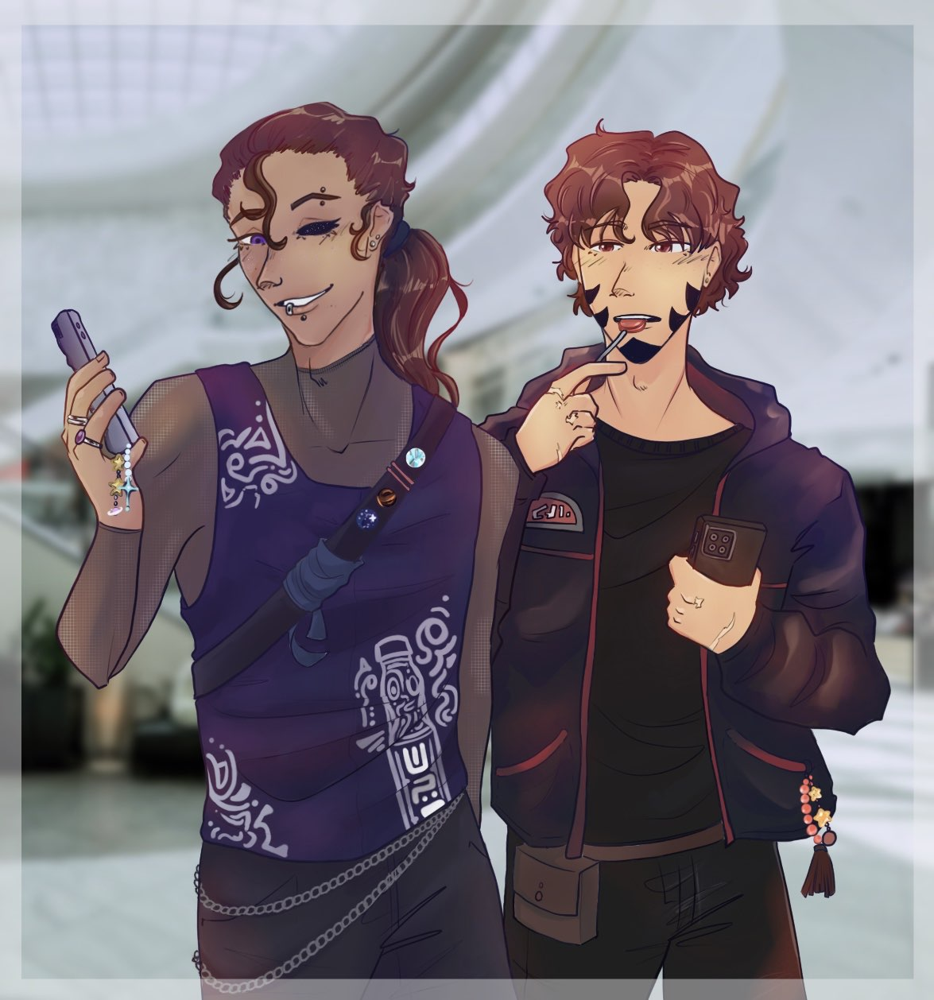
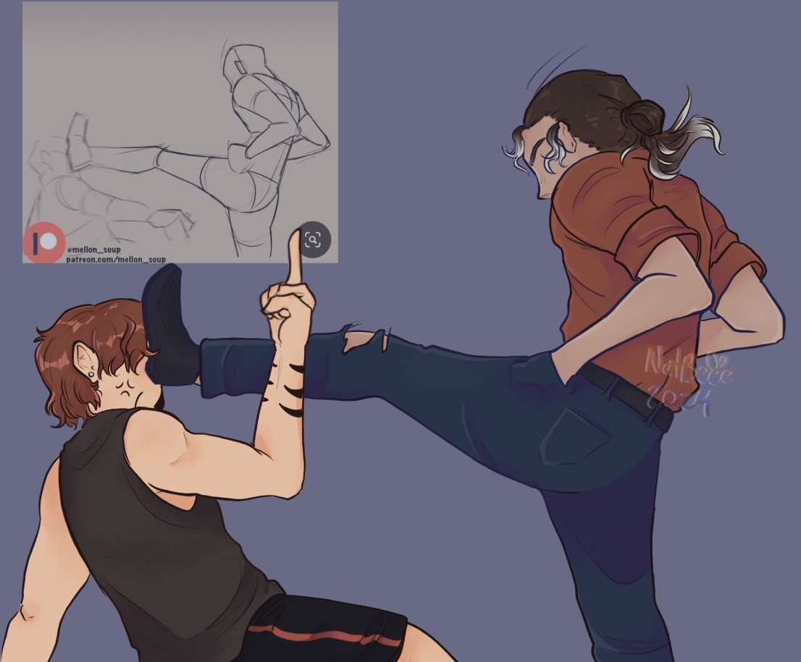
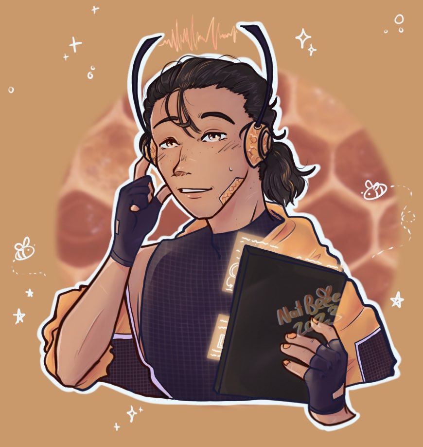
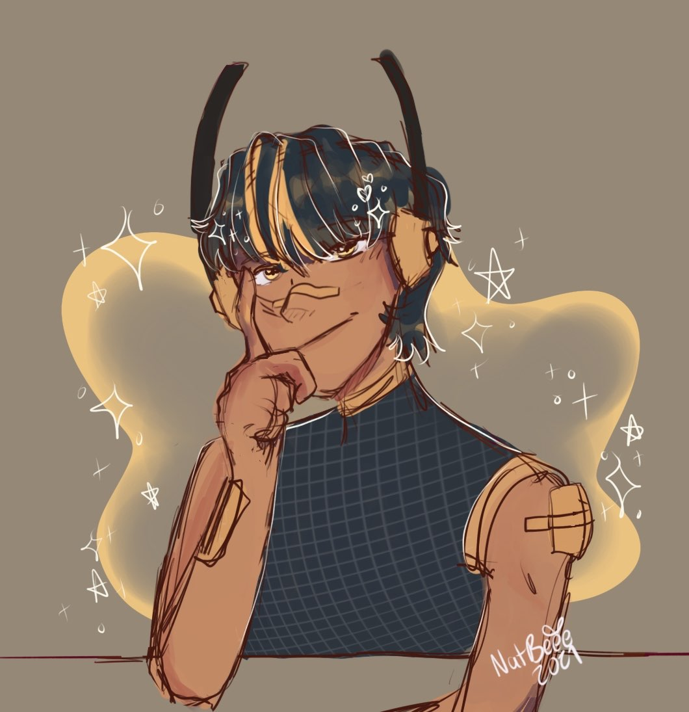
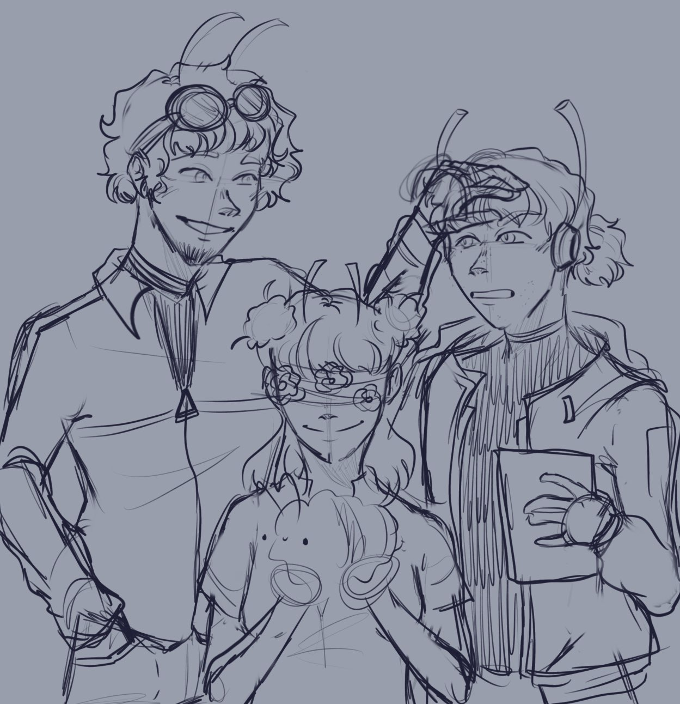
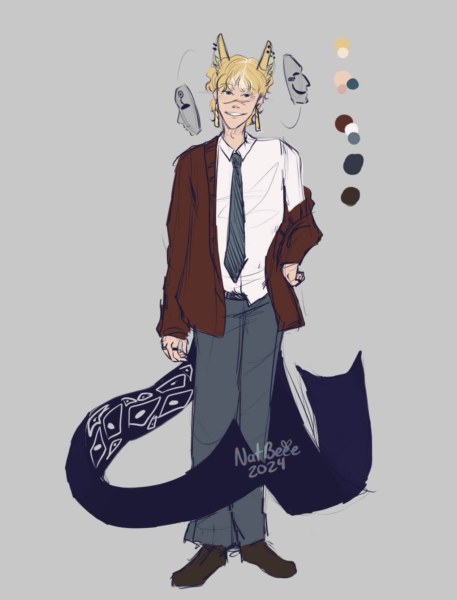

Zephyr is the last adopted child of Scott’s. Unlike Radar and Ian who are human, Zeph is the physical embodiment of a star somewhere in the galaxy. Most stars are normal stars but a select few are a part of an ancient race that document and protect various alien knowledge, almost like libraries. These stars project physical bodies onto planets to learn as much as they can and store that info in their distant star body. When a star library goes supernova, that information is stored and kept in new stars that form and the cycle starts again. New star libraries retain all the information from the previous star and are projected onto a new planet to gather more information. Zephyr is one such star library and has been on Earth gathering information on humans since the 1850’s. He has since been lax with this mission and spends his days in Zevine learning about the different ways humans operate in the Underground.



"Honey"
Honey is part of a hivemind colony that operates in Zevine as an information collection hub and delivery company. While the hive is a tight knit community and primarily made up of the bee hybrid race, anyone can be hired into the company. They offer state of the art technology that allows any non flight race to fly and complete deliveries. Honey in particular needs to use one of the jetpacks offered from the hive as he lost his wings in a freak accident when he was young. He since took up the job of information collection and sorting rather than go out and do deliveries.



Carmen
Carmen is Ian’s older brother who awakened his powers. Carmen’s variant powers manifested at age three, and he has since honed them to perfection. He is able to shapeshift into anything as large as about seven feet tall and five feet wide, even objects. It was chaos when he was younger and he spent hours entertaining Ian when he was born. Later he acquired an interest in science and research about variant powers which is how he forcibly awakened Ian’s dormant powers. He then left the family house to settle in Zevine where he could research and experiment freely, mainly trying to keep Ian out of this new line of research since he already found success with him.